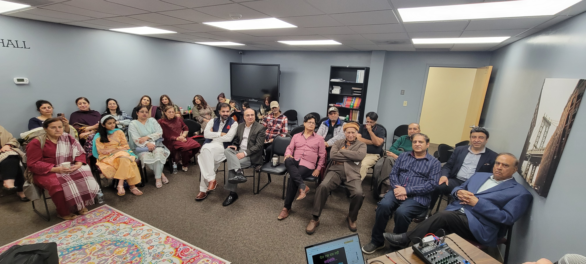
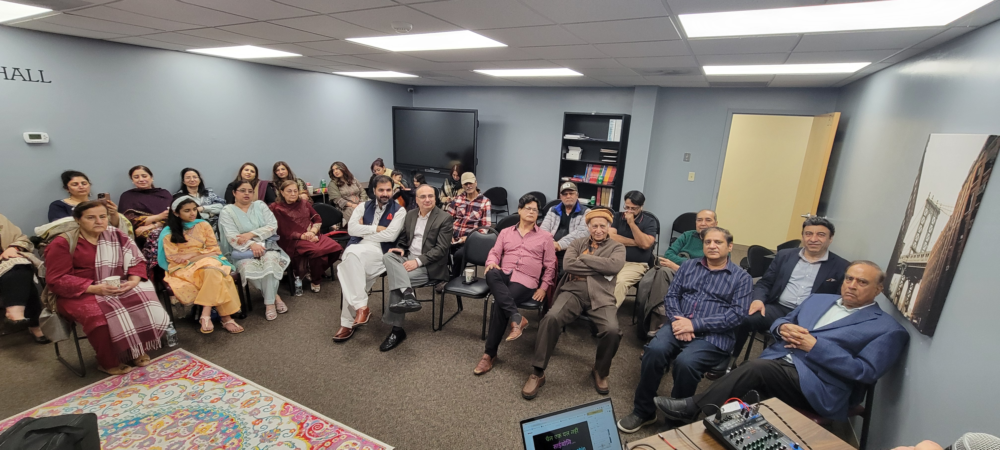

Our Story
Co-founders Anas Mangla and Nasreen “Naz” Akhtar launched Bridge Niagara after seeing the needs of families through their local businesses. Mangla operates several neighborhood ventures that create gathering spaces, while Akhtar’s catering and event work has long supported community causes. Together they envisioned a foundation that unites small businesses and residents to lift up the city they love.
 
